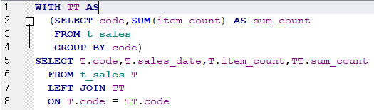

WITH句（共通テーブル式）

エクセルVBAでデータベースを扱うためのSQL入門です。
前回までに、サブクエリの基本的な使い方やサブクエリをネストした場合のSQLの書き方について説明しました。
WITH句は共通テーブル式と呼ばれ、同じサブクエリを一つにまとめることができます。
WITH句の構文
(サブクエリ)の結果で一時的なテーブルを作成し名前をつけてあるものとイメージして下さい。
WITH 名前 AS (サブクエリ) [ , 名前 AS (サブクエリ) [ , 名前 AS (サブクエリ) ] ・・・]
そこでは、WITH句で作成した名前を一つのテーブルとして扱うだけになりますので、
SQLが読みやすく簡潔になります。
WITH句の最も簡単な使用例
SELECT T.code,T.sales_date,T.item_count,TT.sum_count
FROM t_sales T
LEFT JOIN (SELECT code,SUM(item_count) AS sum_count
FROM t_sales
GROUP BY code) TT
ON T.code = TT.codeWITH TT AS
(SELECT code,SUM(item_count) AS sum_count
FROM t_sales
GROUP BY code)
SELECT T.code,T.sales_date,T.item_count,TT.sum_count
FROM t_sales T
LEFT JOIN TT
ON T.code = TT.code↓
WITH TT AS (サブクエリ)
WITH句に複数のサブクエリを使用する例
これについては後の章で紹介しています。
あくまで、WITHの説明としてサブクエリを使ったサンプルSQLになります。
SELECT TDATE.sales_date
,T001.sum_count AS 'code_001'
,T002.sum_count AS 'code_002'
,T003.sum_count AS 'code_003'
FROM
-- 日付
(SELECT sales_date
FROM t_sales
GROUP BY sales_date) TDATE
-- code=001
LEFT JOIN
(SELECT sales_date
,SUM(item_count) AS sum_count
FROM t_sales
WHERE code = '001'
GROUP BY sales_date) T001
ON TDATE.sales_date = T001.sales_date
-- code=002
LEFT JOIN
(SELECT sales_date
,SUM(item_count) AS sum_count
FROM t_sales
WHERE code = '002'
GROUP BY sales_date) T002
ON TDATE.sales_date = T002.sales_date
-- code=003
LEFT JOIN
(SELECT sales_date
,SUM(item_count) AS sum_count
FROM t_sales
WHERE code = '003'
GROUP BY sales_date) T003
ON TDATE.sales_date = T003.sales_date
まず、日付の一覧を取得するサブクエリを主として、
このサブクエリに、codeが001,002,003ごとのサブクエリをJOINしています。
それぞれのサブクエリをSELECTの選択カラムとすることで横展開しています。
このSQLをWITH句を使って書き直します。
WITH TDATE AS (SELECT sales_date
FROM t_sales
GROUP BY sales_date)
,TSUM AS (SELECT code,sales_date
,SUM(item_count) AS sum_count
FROM t_sales
WHERE code IN ('001','002','003')
GROUP BY code,sales_date)
SELECT TDATE.sales_date
,T001.sum_count AS code_001
,T002.sum_count AS code_002
,T003.sum_count AS code_003
FROM
-- 日付
TDATE
-- code=001
LEFT JOIN
TSUM T001
ON TDATE.sales_date = T001.sales_date
AND T001.code = '001'
-- code=002
LEFT JOIN
TSUM T002
ON TDATE.sales_date = T002.sales_date
AND T002.code = '002'
-- code=003
LEFT JOIN
TSUM T003
ON TDATE.sales_date = T003.sales_date
AND T003.code = '003'WITH句の中の、
WHERE code IN ('001','002','003')
この条件が無いと、いったん全データを集計することになり処理時間がかかってしまいます。
ただし、
サブクエリが扱いやすくなったからと言って、そもそもサブクエリを使用する必要があるかは良く考えてみましょう。
サブクエリは付け足し付け足しができるので、出来上がったSQLが継ぎはぎだらけの複雑なものになってしまう事が多々あります。
各テーブル各データの関連性を良く考えてSQLを整理するようにしましょう。
WITH句を使った再帰SQL
再帰とは、その記述の中に自信への参照を含めることでループ処理させるものです。
再帰呼出しについて（再帰プロシージャー）
再帰クエリは、データベースにより書き方は変わりますが、
WITH [RECURSIVE]
SQLiteも含め多くはRECURSIVE（DBにより省略可能）を指定した書き方をします。
今後良いサンプルがあれば紹介することもあるかもしれません。
CASE演算子を使ったマトリックス作成のSQL
SELECT sales_date
,SUM(CASE code WHEN '001' THEN item_count ELSE 0 END) AS code_001
,SUM(CASE code WHEN '002' THEN item_count ELSE 0 END) AS code_002
,SUM(CASE code WHEN '003' THEN item_count ELSE 0 END) AS code_003
FROM t_sales
WHERE code IN ('001','002','003')
GROUP BY sales_dateCASE演算子については以下を参照してください。
先のサブクエリのSQLはWITH句の説明用なので、これは置いとくとしても、
似たような無駄なサブクエリが使われてしまう事は多々あります。
各テーブル各データの関連性を良く考えて、適切なSQLを書くようにしましょう。
WIYH句（共通テーブル式）の最後に
・SQLite環境作成
・テーブル作成
・INSERT
・SELECT
・WHERE、GROUP、HAVING、ORDER
・JOIN
・UNION
・UPDATE
・DELETE
・インデックス作成
・トランザクション処理
・サブクエリ
・WITH句
データベースを扱う上で通常必要とされる基本的事項については一通り説明できたと思います。
今後は、さらに知っておくと便利な機能やSQLについて、参考になりそうなものがあれば随時追加していきます。
同じテーマ「SQL入門」の記事
データの更新（UPDATE）
データの削除（DELETE）
他のテーブルのデータで追加/更新/削除
インデックスを作成して高速化（CREATE INDEX）
トランザクション処理
VBAクラスの全コード：トランザクション処理
サブクエリ（副問合せ）
サブクエリのネストとSQLコメント&整形
WITH句（共通テーブル式）
取得行数を限定するLIMIT句
分析関数（OVER句,WINDOW句）
新着記事NEW ・・・新着記事一覧を見る
VBA100本ノック 100本目：WEBから100本ノックのリストを取得｜VBA練習問題（3月3日）
VBA100本ノック 99本目：自動席替え（行列と前後左右が全て違うように）｜VBA練習問題（3月2日）
VBA100本ノック 98本目：席替えルールが守られているか確認｜VBA練習問題（3月1日）
VBA100本ノック 97本目：Accessデータを取得（グループ集計）｜VBA練習問題（2月27日）
VBA100本ノック 96本目：Accessデータを取得（マスタ結合&抽出）｜VBA練習問題（2月26日）
VBA100本ノック 95本目：図形のテキストを検索するフォーム作成｜VBA練習問題（2月24日）
VBA100本ノック 94本目：表範囲からHTMLのtableタグを作成｜VBA練習問題（2月23日）
VBA100本ノック 93本目：複数ブックを連結して再分割｜VBA練習問題（2月22日）
VBA100本ノック 92本目：セルの色を16進で返す関数｜VBA練習問題（2月20日）
VBA100本ノック 91本目：時間計算（残業時間の月間合計）｜VBA練習問題（2月19日）
アクセスランキング ・・・ ランキング一覧を見る
1.最終行の取得（End,Rows.Count）｜VBA入門
2.RangeとCellsの使い方｜VBA入門
3.変数宣言のDimとデータ型｜VBA入門
4.マクロって何？VBAって何？｜VBA入門
5.Range以外の指定方法（Cells,Rows,Columns）｜VBA入門
6.セルのコピー&値の貼り付け（PasteSpecial）｜VBA入門
7.繰り返し処理（For Next)｜VBA入門
8.セルに文字を入れるとは（Range,Value）｜VBA入門
9.マクロはどこに書くの（VBEの起動）｜VBA入門
10.とにかく書いてみよう（Sub,End Sub）｜VBA入門
このサイトがお役に立ちましたら「シェア」「Bookmark」をお願いいたします。
記述には細心の注意をしたつもりですが、
間違いやご指摘がありましたら、「お問い合わせ」からお知らせいただけると幸いです。
掲載のVBAコードは動作を保証するものではなく、あくまでVBA学習のサンプルとして掲載しています。
掲載のVBAコードは自己責任でご使用ください。万一データ破損等の損害が発生しても責任は負いません。